MAPNOVATEA rigorous Cassini-Soldner projection, refined with a national network of surveyed toposheet corners, converts cadastral grid coordinates — in metres or feet — to UTM Arc 1960 and back, at metre-level accuracy.
Converted points plot live on an interactive map alongside the Survey of Kenya toposheet grid and the ground-control network. Toggle layers and switch between satellite and street basemaps.
Kenya's pre-1950 cadastral surveys used the Cassini-Soldner projection on the Clarke 1858 ellipsoid, measured in British feet, with belts centred on 35°, 37°, 39° and 41°E. Converting to modern UTM Arc 1960 needs more than a formula — the historical grid has local distortions that only surveyed control can capture.
Ellipsoidal forward and inverse Cassini-Soldner on Clarke 1858, in feet, per belt — then a geodetic transfer into Arc 1960 (Clarke 1880), each belt on its correct UTM zone (35°E→36, 37/39/41°E→37).
Clarke 1858 · a = 20 926 348 ftHundreds of published toposheet corners — each carrying both Cassini and UTM values — are cleaned, de-duplicated and turned into a residual field that corrects the projection locally.
634 control points · 4 beltsNear control, the correction runs at full strength for metre-level results. Far from any control it fades smoothly back to the pure projection, so you never get a wild extrapolation.
Inverse-distance · smooth taperAccuracy is highest where surveyed control is dense. The leave-one-out test removes each corner and predicts it from its neighbours — a deliberately pessimistic measure, since real conversions fall inside the network rather than at its removed edges. Where control is sparse the result gracefully approaches the rigorous projection (~200 m bias vs the legacy grid) instead of failing. Source: national Survey of Kenya toposheet corner coordinates.
Drop this PROJ string into QGIS, GDAL or any PROJ-based tool to define a Cassini belt as a custom CRS. Choose your central meridian: